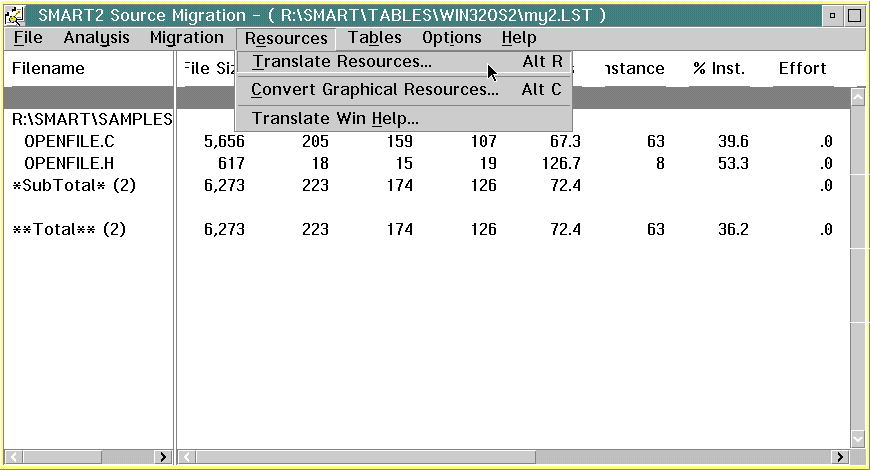
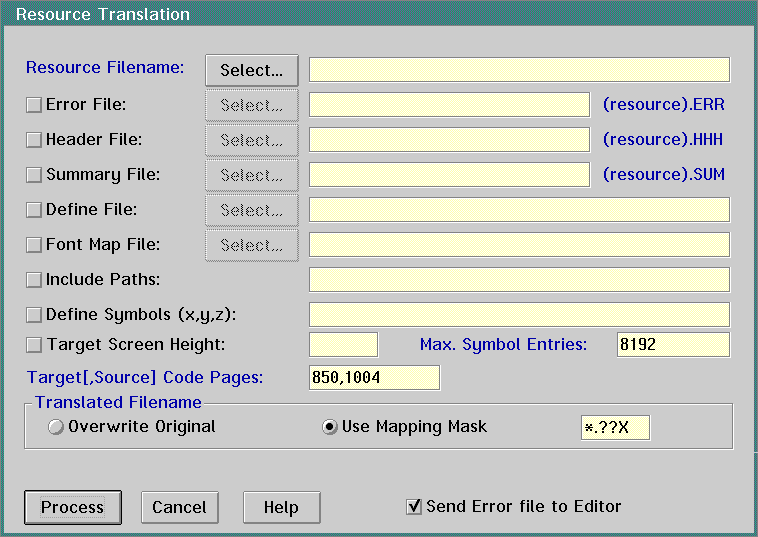

Migrating Windows Resource Files
- On the SMART2 Source Migration window, go to
the Resources pull-down. Select Translate Resources.
- SMART displays the Resource Translation dialog.
Click on the Select push button next to the Resource Filename: entry
field.
- SMART displays the Select Resource Filename dialog.
Select a resource file. Check the Send error file to editor check box so
that SMART logs status information. Click on the Ok push button.
- SMART displays the Resource Translation dialog.
Click on the Process push button.
- SMART displays the SMART2 Source Migration window.
Go to the File pull-down. Select Open/View File(s).
- SMART displays the Open/View File dialog. Select
the converted resource file. Click on the Open push button to view
the resource file.
- SMART displays the resource file in the SLink
- The Smart Editor window. The comments in the resource file indicate what
SMART did to convert your resource file. Use the Help pull-down on this
window to get information about the migrated resource file.
Note: The Resource Translator in SMART allows the choice of converting
resources in one of the following formats:
- String id: Check the Supports String ID check
box when using the Open32 functions for resources. The .hhh file is not
required. The Resource Compiler accepts the resources with ids specified
as quoted strings.
- Integer id: Make sure the Supports String ID
check box is not checked in order to generate the required .hhh file. This
file defines the resource ids for use with the OS/2 Warp native functions.
[Back: Migrating Windows Code]
[Next: Migrating Windows Help Files]